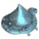

+
 Trace of Wave
🔗
+
How to Get
+
Item Box
Imperial Trace Box
[Daily] [Alchemy] Striving Towards Imperial Delivery
+
Used In Recipe
+
Workshop
🔗
Splash Swimming Goggles
10
And More...
+
Notes
-Notes
 Imperial Trace Box
Imperial Trace Box